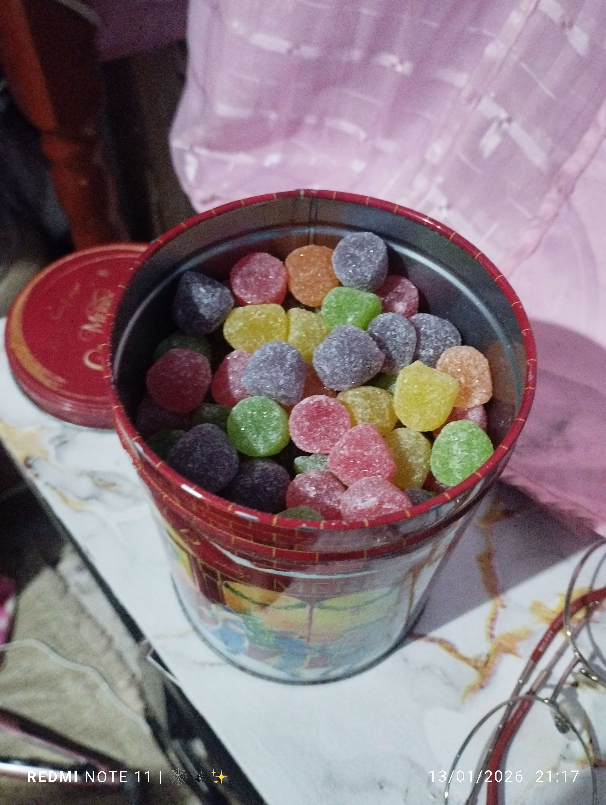

O início de tudo 💚
Nois nos conhecemos em uma madrugada qualquer, onde eu só queria conversar e tava morrendo de tédio...
E por quase 1 segundo, quando eu estava prestes a kitar do jogo, puumm, um anjo literalmente veio dos céus, me chamando de fofo e falando que achou minha skin muito tri.
E ali, sem ao menos saber, um homem que estava passando por dificuldades e uma tristeza profunda ia passar horas e horas conversando e jogando em diversas madrugadas com uma garota tão incrível e carismática...
Uma garota que conseguiu, em menos de segundos, fazer esse homem triste sorrir e se sentir tão acolhido que, quando foi mimir, teve a MELHOR noite de sono de todas. 💚
E foi assim que tudo começou...
E algumas das primeiras coisas que ficaram guardadas comigo foram justamente algumas das primeiras fotos que você me mandou...
A primeira vez que vislumbrei esses olhinhos tão brilhantes e cativantes... 💚✨️👀

O dia que nois interligamos 💚🍬
E nunca vou me esquecer do dia que a gente ficou tão próximos um do outro, foi o dia que c tava de TPM e queria comer jujubas ou açaí às 3 da madruga, man AKAKAKAKAKAK.

Eu lembro até hoje de ficar pensando: “Mas já era 3 da madrugada, guria!” 😭
E no dia seguinte, cê simplesmente gastou teu dinheiro pra comprar um pote inteiro de jujubas e, em menos de segundos, comeu aquele horror de açúcar inteirinho .
E ainda comprou um copão de açaí e comeu sem dó, véi 😔.
O dia do Chubirau Daunm 🎵💚
E tbm teve outro dia que ficamos tão próximos, foi quando c tava assistindo Carrossel e ficou com aquela música na cabeça e ainda colocou ela na minha também vey 😭
Te juro, fiquei DIAS E DIAS com isso na cabeça, cantando AFEEEE AKAKAKAKAKAKA.
“CHUBIRAU DAUNM... CHUBIRAU DAUNM... OOOOHHH...” 🤪
Aiai bons tempos, nois era bem doido ne? Akakakakakak.
Quando comecei a perceber o que sentia por você 💜💚
Como pode vey, um mlk como eu, que não sentia nada por ninguém, simplesmente tu chegou na minha vida e mudou completamente tudo!. Todos os meus pensamentos e a forma como eu via o mundo começaram a mudar por sua causa.
Era meio estranho pra mim naquela época, eu não sabia direito como funcionava e nem o que eu tinha que fazer. Mas desde quando a gente começou a conversar pelo Discord, eu já tava sentindo alguma coisa por você, só não sabia explicar direito.
Só fui perceber isso quando comecei a ficar pensando em você e até sonhei com você.
Semanas depois, quando a gente tava meio brigado, você veio me mandar uns textões que me deixaram sem reação. Eu tava todo tremedinho, sem saber nem o que responder direito.
Foi então que comecei a perceber que não queria perder você. Não queria perder nossa amizade e muito menos a pessoa que tinha se tornado tão importante pra mim.
Eu simplesmente deixei meus sentimentos e meu coração falarem por mim. Foi aí que finalmente consegui entender:
Eu te amo. 💜
Eu amava conversar com você por horas, amava como você me tratava, as vezes que me fazia rir alto pra karalho nas madrugadas, nossas crises de risos e todos aqueles momentos bons que passei contigo.
Foi esse acúmulo de pequenas coisas que me fez perceber que, desde o início, eu ja estava me apaixonado por você.
Pelos seus sorrisos, pelo brilho dos seus olhos, pelo seu jeito lindo de vc ser e por tudo aquilo que me encantava e continua me encantando até hoje.
As palavras que mudaram minha vida 💚💜
Eu não queria perder você. Minha cabeça simplesmente estava CLAMANDO, PEDINDO e falando bem alto pra eu te dizer tudo que eu sentia.
E então chegou aquele momento.
O começo de uma relação entre a Mulher-Aranha e o Hello Kitty 💚🕷😸💜
Bom, depois do meu pedido de namoro, você aceitou, gritou lá falando tudo torto e ainda me chamou de veio gordo vey, te lascar guria 🙄
Mas pelo menos aceitou meu pedido de namoro e é isso que mais importa akakakakakak.
A partir daquele momento, começamos uma nova fase da nossa história. Ficamos ainda mais próximos e, a cada dia que passava, eu ficava mais apaixonado por você.
Os primeiros momentos como namorados 💚💜
Depois daquele dia, tudo começou a ficar diferente. A gente já era muito próximo antes, mas agora tinha alguma coisa ainda maior entre nós dois.
Cada conversa, cada madrugada, cada ligação e cada momento juntos começou a ter um significado diferente pra mim. Eu simplesmente gostava cada vez mais de estar do seu lado hihihihihi!.
E quanto mais eu te conhecia, mais eu percebia que tinha feito a melhor escolha da minha vida toda!.
A gente começou a compartilhar ainda mais coisas um com o outro. Você conheceu pessoas da minha família, eu conheci sua irmã, e aos poucos nossas vidas foram ficando cada vez mais interligadas.
De alguma forma, você sempre esteve comigo 💚
Mesmo com toda a distância e com todos os problemas que apareciam, você continuava encontrando um jeito de estar comigo.
Seja numa conversa de madrugada, numa partida de Murder, numa mensagem aleatória ou simplesmente ficando comigo enquanto eu não tava bem.
E talvez você nem perceba o quanto essas pequenas coisas significam pra mim.
Mas eu percebo.
Eu lembro de cada conversa, de cada risada, de cada momento em que você conseguiu me fazer esquecer, por alguns minutos e até horas, de tudo aquilo que estava acontecendo ao meu redor.
Um dia que eu nunca vou me esquecer 💚
Teve também aquele dia do meu alistamento no exército.
Eu tinha passado por um dia muito difícil, cheio de coisas na cabeça, pressão e sentimentos que eu nem sabia direito como explicar.
Quando cheguei em casa, eu simplesmente não consegui segurar tudo aquilo dentro de mim.
E foi mais uma vez com você que eu consegui conversar.
Aquele momento foi diferente. Não foi só mais uma conversa qualquer entre nós.
Foi uma daquelas conversas que fazem a gente perceber o quanto uma pessoa realmente se tornou importante na nossa vida.
Eu pude falar o que estava sentindo, colocar pra fora aquilo que estava preso dentro de mim e simplesmente ser eu mesmo.
E você ficou ali.
Você me ouviu, conversou comigo e me fez sentir que eu não precisava enfrentar tudo sozinho.
Talvez você não saiba disso... 💚
Mas momentos assim fizeram eu perceber uma coisa:
Você não é importante pra mim somente porque é minha namorada.
Você é importante para mim porque é você.
A pessoa com quem eu posso rir das coisas mais idiotas, conversar durante horas, jogar, contar meus problemas, falar besteira e também ter aquelas conversas sérias que ficam guardadas no coração.
Você acabou se tornando parte da minha vida de uma maneira que eu jamais imaginaria quando entrei naquele serve naquela madrugada.
Olha só onde a gente chegou... 🥹💚
Se alguém tivesse me falado naquela época que aquela garota que me chamou de fofo por causa da minha skin se tornaria uma das pessoas mais importantes da minha vida, eu provavelmente teria achado impossível.
Mas aconteceu.
Aquela madrugada virou conversa. A conversa virou amizade. A amizade virou sentimento. E o sentimento virou nós dois. E nois dois um dia vamos nos casar. E depois morar juntos e ter varios filinhos
E agora já são meses de história, lembranças, risadas, discussões bobas, momentos difíceis, momentos incríveis e muito carinho.
Já passamos por tanta coisa juntos que, quando eu paro pra pensar, parece até mentira que tudo começou de uma forma tão aleatória. mas é assim mesmo, afinal de contas esse sempre foi o nosso destino, nos fomos feitos um para o outro, ambos somos cara metade do outro.
Algumas das minhas lembranças favoritas de você 💚
Existem várias fotos suas que eu simplesmente amo. Algumas porque você está linda, outras porque lembram momentos específicos e algumas simplesmente porque são você e é isso q torna a fotos mais incríveis e belas.

A fotinha das suas unhas q me cativaram bastente, Eu realmente adorei elas pq combinaram com vc. E provavelmente você nem imaginava o tanto q eu amei elas hihihihihi.

E essa aqui também tem uma história que realmente tocou meu coração, Por simplesmente vc ter feito isso por mim e eu amei muito isso. Principalmente porque eu lembro de você me contando como foi colocar os brincos e depois ficando feliz porque eu amei eles hihihihihi.

E essa aqui nem preciso explicar muito né?
QUE MULHER GATA, MEU DEUS DO CÉU 😭💜
Porque eu amo tanto esses pequenos momentos... 💜
Talvez para qualquer outra pessoa sejam só fotos. Só vídeos. Só conversas. Só brincadeiras.
Mas pra mim não são.
Cada uma dessas coisas carrega uma lembrança. Uma conversa. Uma risada. Um sentimento.
E é justamente por isso que eu quis colocar tudo isso aqui. Pra guardar um pouquinho da nossa história em um lugar só.
Ai como ela é uma Princesa vey... 🤭💜
Eu simplesmente AMO esse vídeo.
AFE VEY VC TA TÃOFOFA NESSE VÍDEO, EU AMEI MUITO ELE, N É ATOA Q COLOQUEI ELE AQUI DE TAO ESPECIAL Q É HIHIHIHIHI. 🥰💜
E esse aqui também não poderia ficar de fora rs 😌.
Porque slk, você é simplesmente isso:
UMA MULHER ESPETACULAR E MARAVILHOSA. 🫦💜
E até os pequenos detalhes viraram especiais 🥹
Tem coisas que aconteceram entre nós que talvez pareçam pequenas, mas que eu nunca esqueci e nunca vou me esquecer.
Aquelas primeiras fotos q vc me mandou. As jujubas às 3 da madrugada. O Chubirau Daunm. Nossas conversas. As diversas calls. Os Dias, As tarde e Fins de Tarde, E As madrugadas. As crises de risos. Os momentos em que um malinava com o outro. Os Flertes da gente dando em cima um no outro. E entre diversas coisas que passamos juntinhos.
Tudo isso foi construindo, aos poucos, a história que hoje é nossa.
Eu quero continuar escrevendo essa história com você 💚
Eu não sei exatamente tudo que vai acontecer daqui pra frente.
Não sei quantas outras madrugadas ainda vamos passar conversando, quantas outras discussões bobas teremos, quantas outras vezes vamos rir até não conseguir mais ou quantas outras histórias ainda vamos criar.
Mas eu sei que quero viver tudo isso com você e com mais ninguém.
Quero continuar conhecendo cada detalhe seu. Quero continuar vendo você crescer, realizando seus sonhos, conquistando suas coisas e estando ao seu lado sempre que precisar.
E um dia, quando toda essa distância for apenas uma lembrança, eu quero finalmente poder te abraçar de verdade.
Sem ser por uma tela. Sem ser por uma ligação. Sem precisar imaginar como seria.
Só Eu💜 e Você💚.
Um dia eu ainda vou colocar uma aliança no seu dedo como tinha prometido... 💍💚
Eu sei que ainda temos muita coisa pela frente. Ainda somos jovens e ainda temos muito pra viver, aprender e conquistar.
Mas quando eu penso no futuro, uma das coisas que eu mais quero é poder olhar pra trás e lembrar de tudo que a gente passou, e dizer para vc q tudo isso valeu apena.
Quero lembrar daquela madrugada em que nos conhecemos e pensar:
"Slk... ainda bem que eu não quitei daquele server e fui ir mimir."
Porque se eu tivesse saído naquele momento, talvez nada disso tivesse acontecido.
E eu nem consigo imaginar minha vida sem ter conhecido você.
Você foi um anjo e um presente que DEUS me deu 💚
Eu entrei naquele server sem esperar absolutamente nada.
E saí dele tendo conhecido uma pessoa que mudaria completamente a minha vida.
Talvez por isso eu goste tanto de pensar que o destino acabou ocasionando em que agente pudesse nois conhecer e acabou se tornando a melhor coisa da minha vida!.
E por mais que eu brinque, te malina, reclame de quando c n almoça, reclame de quando c n bebe água e diga que você é uma cu de cachorro...
No fundo, eu amo cada coisinha sua.
Feliz aniversário, minha Miranha! 🎂💚🕷✨️🌷
Finalmente chegamos ao seu dia.
E eu queria aproveitar esse pequeno espaço que fiz especialmente pra você pra te lembrar de uma coisa:
EU TE AMO. 💚💜
Obrigado por ter aparecido na minha vida.
Obrigado por todas as risadas.
Obrigado por todas as conversas.
Obrigado por cada madrugada.
Obrigado por cada momento em que você ficou comigo quando eu mais precisava.
Obrigado simplesmente por ser você.
Espero que seu aniversário seja tão especial quanto você é pra mim.
Que você consiga realizar seus sonhos, que tenha muitos motivos pra sorrir e que continue sendo essa garota incrível, carismática, tchonga e completamente maravilhosa que eu conheci.
E mesmo estando longe, quero que você saiba que hoje eu estou pensando em você e desejando que seu dia seja incrível.
Mas ainda falta uma coisa... 👀💚
Você achou que eu ia terminar tudo sem uma última surpresa?
Minha última pergunta pra você momor... 🥹💚
Depois de tudo isso...
Depois daquela madrugada.
Dos choros.
Das brigas.
Das risadas.
Dos momentos difíceis.
Da distância.
E de todos esses meses juntinhos...
Você ainda escolheria aquele cara q te ama tanto que entrou naquele servidor, naquela madrugada? 💚💜
Então fica aqui meu último recado... 💚
Feliz aniversário, minha Florzinha.
Eu te amo muitão.
E independente de quantos quilômetros existam entre nós, você sempre vai ter um lugar enorme no meu coração.
Espero que esse pequeno presente consiga te arrancar pelo menos alguns sorrisos, porque foi feito pensando em você do começo ao fim.
Com MUITO amor,
seu Namoradinho. 💚💜
FIM... ou sera q é so o começo? 🥰💚💜
Porque ainda temos muita história pra escrever juntos.
EU TE AMO MINHA OBESINHA. 🕷💚💜🌷✨️🥰